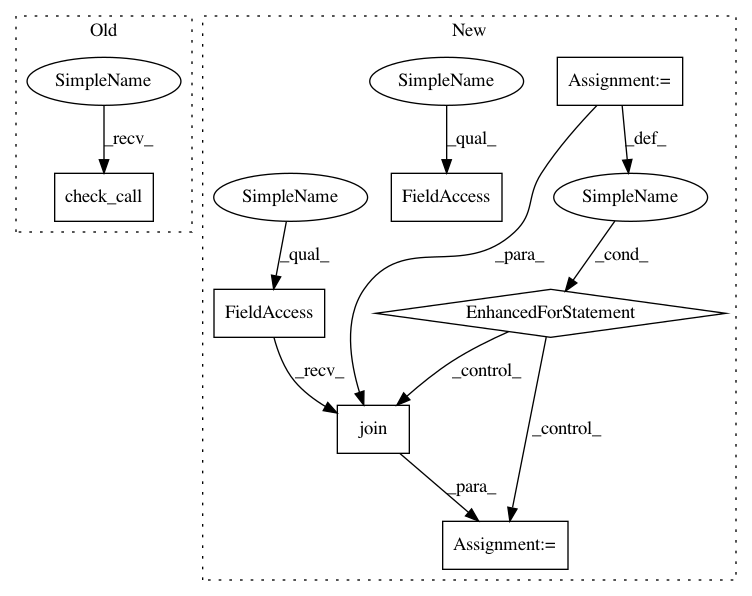

435560056e838c96100a0e80aee9dbbe57ea4c4f,iris/trainer/util.py,,_recursive_copy,#Any#Any#,34
Before Change
def _recursive_copy(src_dir, dest_dir):
subprocess.check_call(["gsutil", "-q", "-m", "rsync", src_dir, dest_dir])
class ExportLastModelMonitor(tf.contrib.learn.monitors.ExportMonitor):
After Change
When called, dest_dir should exist.
for dir_name, sub_dirs, leaf_files in file_io.walk(src_dir):
// copy all the files over
for leaf_file in leaf_files:
leaf_file_path = os.path.join(dir_name, leaf_file)
_copy_all([leaf_file_path], dest_dir)
// Now make all the folders.
for sub_dir in sub_dirs:
file_io.create_dir(os.path.join(dest_dir, sub_dir))
class ExportLastModelMonitor(tf.contrib.learn.monitors.ExportMonitor):
Export the last model to its final location on GCS.
The tf.learn ExportMonitor exports the models to a location based on the last
In pattern: SUPERPATTERN
Frequency: 3
Non-data size: 7
Instances
Project Name: GoogleCloudPlatform/cloudml-samples
Commit Name: 435560056e838c96100a0e80aee9dbbe57ea4c4f
Time: 2016-12-15
Author: joshgc@google.com
File Name: iris/trainer/util.py
Class Name:
Method Name: _recursive_copy
Project Name: google/unrestricted-adversarial-examples
Commit Name: 43900d342b205d66d196313d0f77c534df246a7f
Time: 2018-09-02
Author: nottombrown@gmail.com
File Name: bird-or-bicycle/bird_or_bicyle/dataset.py
Class Name:
Method Name: _crop_and_resize_images
Project Name: GoogleCloudPlatform/cloudml-samples
Commit Name: 435560056e838c96100a0e80aee9dbbe57ea4c4f
Time: 2016-12-15
Author: joshgc@google.com
File Name: iris/trainer/util.py
Class Name:
Method Name: _copy_all
Project Name: GoogleCloudPlatform/cloudml-samples
Commit Name: 435560056e838c96100a0e80aee9dbbe57ea4c4f
Time: 2016-12-15
Author: joshgc@google.com
File Name: iris/trainer/util.py
Class Name:
Method Name: _recursive_copy